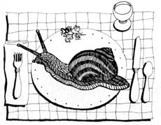

Seasons of the Garden
What's escargot to the gourmet is trouble
to the gardener.
EUROPEAN BROWN SNAILS WERE imported into California in the 1850s for use as food. The tasty mollusks didn't catch on in kitchens back then, and many of them quietly "slipped out back": They went wild and started eating (farm and garden crops) rather than being eaten.
Today, dining on snails is becoming increasingly popular in the U.S. There are several California escargot canneries and even a Snail Club of America (with its own newsletter). Unfortunately, the spreading interest in marketing live snails means that more escapees may invade gardens in other warm parts of the country (they don't tolerate regular, heavy frosts).
To keep that from happening, many states now require inspection of plants from California to make sure they are snail-free; some states require permits to ship live culinary snails; and two states-Florida and Louisiana-prohibit any live shipments. But it's difficult to stop ignorant or defiant would-be snail raisers from ordering "starter kits." Recently, there have been localized snail infestations in some southeastern states. And even though such outbreaks have apparently been controlled, just one overlooked snail could eventually lead to a regional infestation. So remember, as far as gardeners are concerned, the only good edible snail is a dead one!
Agricultural scientists are always coming up with something new. Recent (but not yet available to the public) discoveries include a drought-tolerant lima bean that produced a respectable crop of pods full of tasty green seeds on only one inch of rainfall in three months; nitrogen-fixing tomatoes (the active bacteria were hiding inside the plant's roots); and a nematode that can inject lethal bacteria into those destructive Japanese beetle grubs in your lawn and garden soil. And, oh yes, researchers are also developing a boon for spray-happy farmers: a tomato that doesn't mind being dosed with the potent, widely used herbicide Roundup.
Did somebody say nematodes? USDA scientists have beneficial nematodes on the brain. With the help of the California biotechnology company, Biosys, they are drying lab-reared nematodes to make them easier to ship. The resulting paste of very flat worms is refrigerated and shipped, and the nematodes are then revived with water.
Sprouting onion sets. Trials in England have shown that onion sets sprout fastest at 60°F and slowest at temperatures just above freezing. So to prevent premature sprouting of your spring onions, store sets in the refrigerator (but not the freezer).
(Gasp!) It's tulipfinger! Compounds found naturally in several bulb species give some people allergic skin reactions (called tulipenvinger in Holland). If planting bulbs begins to give your hands rashes or blisters, protect yourself by wearing rubber gloves.
Good-by, dogwoods? Dogwood anthracnose, first seen in the New York City area in the late 1970s, has begun spreading at a rapid rate. This devastating fungal disease has not yet marched west, but it has reached as far south as Georgia. It affects both eastern (Corpus florida) and western (Corpus Nuttal lii) native dogwoods. Symptoms include water sprouts, cankers at the bases of dead branches, and small purple-outlined spots and larger brown blotches on leaves and flower bracts. It is quite difficult to save infected trees. Fortunately, Japanese flowering dogwoods (Corpus Koysa) show excellent resistance.
Give a nematode bad breath. Soviet experimenters have found that a 1:1 or 1:2 mix of homogenized garlic in water can kill plant-pathogenic nematodes.
Cure those black walnut blues. Most gardeners know that black walnut trees produce juglone, a compound that can damage certain neighboring crops (such as tomatoes). Several researchers have now discovered that bacteria in well-drained soil break down juglone and thus eliminate its toxic effects. So if you're having a problem with nearby black walnuts, you might try improving your soil drainage (or adding some soil from a spot in which both walnuts and juglone-sensitive plants grow) instead of chopping down the beautiful and valuable trees.
Wash away spider mites. Frank and Gertrude Hirsch have grown show-quality roses in Florida (spider mite heaven!) for 17 years and found that regularly spraying their plants with plain water provides better mite control than using a water-insecticide mix.
S ustainable Agriculture for California is an excellent 12-page listing of databases, organizations, periodicals, books and articles. This great resource is useful no matter where you live, and it's free from the Sustainable Agriculture Research and Education Program, University of California Cooperative Extension, Agronomy, Hunt Hall, Davis, CA 95616 . . . . For books on esoteric horticulture subjects such as Bach flower remedies and planetary influences on plants, try the Flower Essence Society (P.O. Box 459, Nevada City, CA 95959; catalogue $1) . . . . A big bargain of a book, the amazingly comprehensive 195-page 1988 International Green Front Report (Friends of the Trees, P.O. Box 1466, Chelan, WA 98816; $8.05) is filled with information on sustainable agriculture, overseas fieldwork, arid gardening, plant societies, herbalism and more .... For a free guide to using insecticidal soaps to manage pests that infest either greenhouses, Christmas trees or landscape ornamentals, write Safer, Inc., c/o J.T. McClellan, 1419 N. 14 St., Reading, PA 19604 . . . . Bulletin #758, Apple Rootstocks and Cultivars ($6.15 from Publications Office, Cooperative Extension Service, Kottman Hall, Ohio State University, Columbus, OH 43210), has color photos and detailed information on the popular apple varieties.
Greg and Pat Williams raise most of their food on a small farm and publish HortIdeas, a fine newsletter on gardening research and products ($15 a year from G. & P. Williams, Rt. 1, Box 302, Gravel Switch, KY 40328).
|
 |
|
|